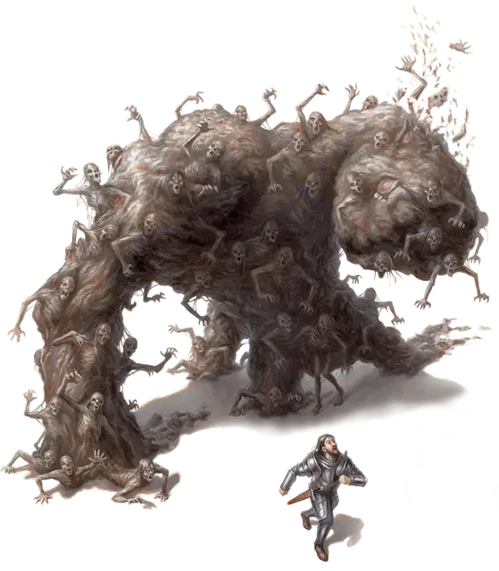

Сгусток зомби
Zombie Clot
Огромная Нежить

Класс Доспеха 12 (природный доспех)
Хиты 104 (11к12 + 33)
Скорость 40 футов
| мод | спас | ||
|---|---|---|---|
| СИЛ | 20 | +5 | +5 |
| ЛОВ | 10 | +0 | +0 |
| ТЕЛ | 16 | +3 | +6 |
| мод | спас | ||
|---|---|---|---|
| ИНТ | 3 | −4 | −4 |
| МДР | 8 | −1 | −1 |
| ХАР | 10 | +0 | +0 |
Иммунитет к урону яд
Иммунитет к состояниям истощение, окаменение, отравление, очарование, ошеломление, паралич
Чувства тёмное зрение 60 футов, пассивное Восприятие 9
Языки понимает все, известные при жизни, но не говорит
Опасность 6 (2300 опыта)
Бонус мастерства +3
Особенности
Смертельная вонь. Любое существо, которое начинает свой ход в пределах 10 футов от зомби, должно преуспеть в спасброске Телосложения Сл 14, иначе получит 9 (2к8) урона ядом и станет отравленным до начала следующего хода существа.
Стойкость нежити. Если зомби получает урон, уменьшающий хиты до 0, он совершает спасбросок Телосложения со Сл 5 + полученный урон, если только это не был урон излучением или урон от критического попадания. При успехе хиты зомби опускаются всего лишь до 1.
Необычная природа. Зомби не нуждается в воздухе, еде, питье или сне.
Действия
Мультиатака. Зомби совершает два удара.
Удар. Рукопашная атака оружием: +8 к попаданию, досягаемость 10 фт.,одна цель. Попадание: 18 (3к8 + 5) дробящего урона.
Погребение под плотью (перезарядка 5-6). Зомби бросает оторванную кучу трупов в существо, которое он может видеть в пределах 30 футов от себя. Цель должна преуспеть в спасброске Силы Сл 16 или получит (3к10) дробящего урона, и если цель — Большое или меньшего размера существо, она становится погребённым в мёртвой плоти.
Существо, погребённое в мёртвой плоти, опутано, имеет полное укрытие от атак и других эффектов за пределами мёртвой плоти и получает 10 (3к6) урона некротической энергией в начале каждого своего хода. Существо может быть освобождено, если мёртвая плоть будет уничтожена. Мёртвая плоть — это большой объект, имеющий КД 10, 25 хитов и иммунитет к урону ядом и психической энергией.
Описание
Среди нежити одинокий зомби является далеко не самой сильной угрозой. Однако ужас неуклюжих мертвецов заключается не в их индивидуальной угрозе, а в их численности, их настойчивости и их отсутствии чувства самосохранения. Толпа зомби погасит лесной пожар своим собственным пеплом или будет заходить в пасть дракона, пока монстр не задохнётся. В ходе своих неумолимых маршей зомби могут получить всевозможные травмы, что потенциально может превратить их в массу ползающих конечностей (см. блок статистики "
рой конечностей зомби [swarm of zombie limbs]"), заразить их ужасными болезнями (см. блок статистики "зомби-разносчик чумы [zombie plague spreader]") или сплести целую орду в одного гниющего титана (см. блок статистики "сгусток зомби [zombie clot]").
См. дополнительно статью: "Бестиарий: Зомби"